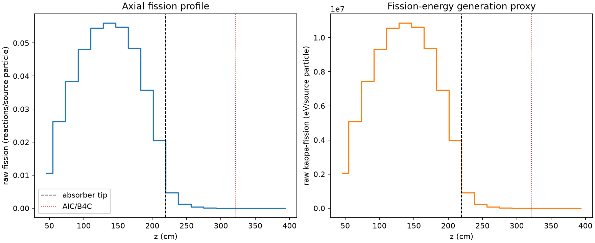
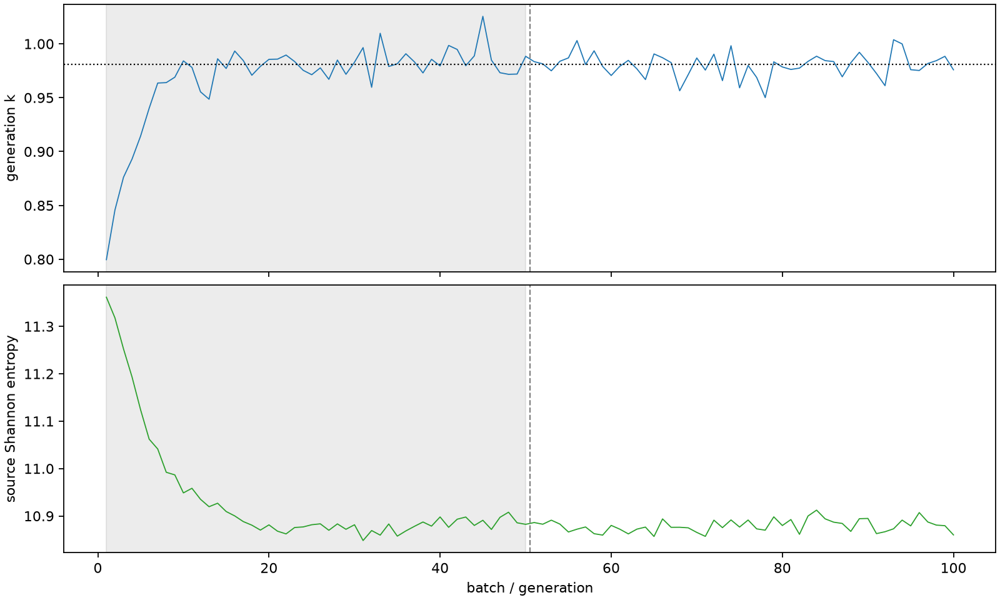

| Alan | Değer |
|---|---|
| Model | beavrs_derived_3d_assembly_v2_proposed |
| Amaç | single_small_code_integration_not_physical_acceptance |
| Durum | completed; fiziksel kabul yok |
| Yakınsama | inceleme gerekli |
| Süre (s) | 32.48510864600394 |
| k ± MC hata | 0.981207 ± 0.001307 |
| Su yoğunluğu (g/cm³) | 0.7405808602612968 |
MC standart hata fiziksel doğruluk yüzdesi değildir. V2 çözeltisi v1 kaynak tablosuyla aynı yoğunlukta değildir.

